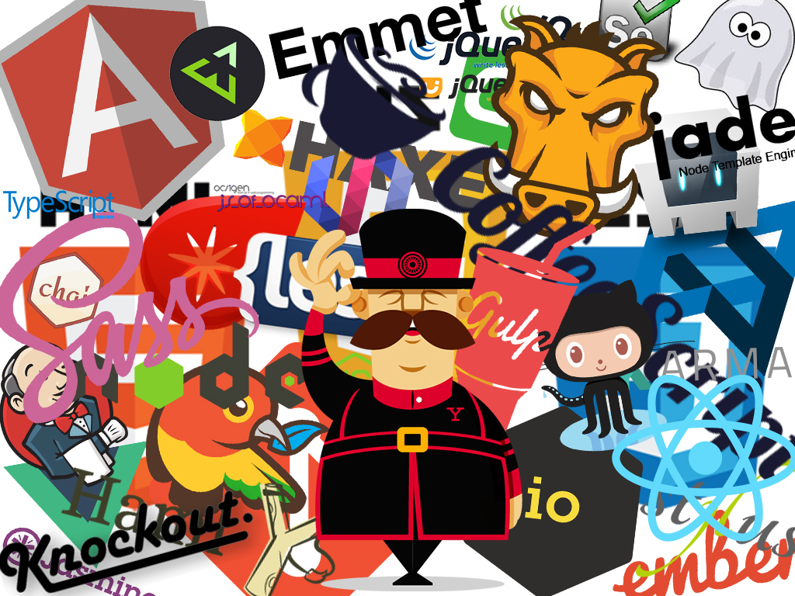
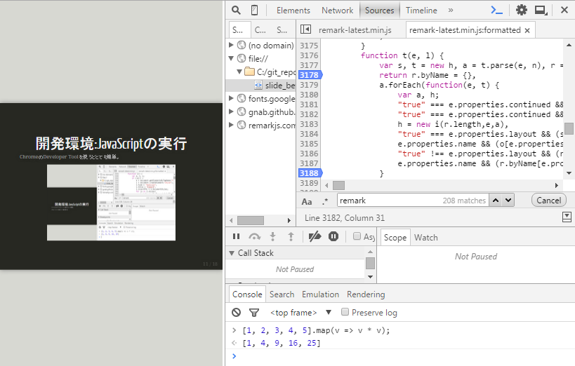

name: inverse layout: true class: center, middle, inverse --- # JavaScript入門の前に  <p style="text-align: right">last modified: 2015/10/06</p> --- template: inverse # index * JavaScriptとは * 何ができるか * 歴史 * 開発環境 * 学習プラン * 参考リンク集 * 補足 --- template: inverse # JavaScriptとは * Javaとは異なるもの(重要) * スクリプト言語(昔インタプリタ、今JITコンパイル) * 主な実行環境はWebブラウザ - プラグインを除けばJS一択 - HTML要素(DOM)を動的に書き換えたり - UIイベントを拾ったり - サーバーと通信したり - 近年はサーバー･デスクトップ向け実行環境も存在 * prototypeという仕組みでオブジェクト指向を実現 * クラスは存在しない(ES5まで。ES6からサポート) * 動的型付け([ダック・タイピング](https://ja.wikipedia.org/wiki/%E3%83%80%E3%83%83%E3%82%AF%E3%83%BB%E3%82%BF%E3%82%A4%E3%83%94%E3%83%B3%E3%82%B0)) * 関数もオブジェクトとして扱われる --- template: inverse # 何ができるか * [d3](http://d3js.org/) * [OpenLayers3](http://openlayers.org/) * [Cesium](http://cesiumjs.org/) * [Node.js(サーバー実行環境)](https://nodejs.org/en/) * このスライドも([remark](https://github.com/gnab/remark)) 複雑高度に組み上がったシステムの代表例としては、 GMail, Facebookなどが挙げられる。 --- template: inverse # 歴史(先史) ## 誕生(1995年) * [Wikipedia:Javascript](https://ja.wikipedia.org/wiki/JavaScript)参照 ## 混沌の時代(-2000年前後) * ブラウザベンダーによって実装がまちまち･･･ ## 古の時代(-2005年くらい) * ブラウザベンダー間の実装の足並みがある程度揃う * 補助的な利用(フォーム入力チェック、メッセージボックスなど) * 装飾的な利用(マウスカーソル装飾など) * ~~ブラウザクラッシャー~~ * おもちゃのようなスクリプト言語という位置づけ --- template: inverse # 歴史(普及期) ## カンブリア爆発(2005年くらい-) 動的なWebサイトの構築に積極的に利用され始める * Ajaxの発明、Googleマップの登場 + その高いポテンシャルが脚光を浴び始める * [jQuery](https://jquery.com/)の流行 + DOM操作が簡単に。ブラウザ間の差異も吸収 --- template: inverse # 歴史(発展期) ## 利用領域の拡大と<br>モダンJavaScriptの模索(2010年くらい-現在) クライアントサイドでレンダリングするSPA(SinglePageApplication)が流行り始め、 JSコードが大規模になると様々な問題が浮上。 クライアントサイドはJS一択という縛りから逃れられないため、 なんとかより良い開発スタイルが実現できないものかと皆知恵を絞った。 * 奔放な言語仕様のため、大規模開発にあたっては｢工夫｣が必要 - 色々な書き方ができてしまう - クラスがない(ES5の場合。準ずるものを模倣することは可能) - include, importといった機能がない - → フレームワーク･ベストプラクティスの乱立... * AltJS(コンパイル後にJavaScriptを生成できる言語)の台頭 - CoffeeScript (Classをサポート) - TypeScript, Haxe, JSX (静的型付けの実現) * サーバーサイド/デスクトップ実行環境の登場(Node.js) - ビルドシステム,タスクランナー等を取り巻くエコシステムの発展 --- template: inverse # 歴史(発展期) ## (参考)フロントエンド開発の複雑高度化 複雑高度化したので各方面が頑張って便利なツールやフレームワークを作った結果。 覚えることが多い上に1年でトレンドが変化するという恐ろしい世界...  出典: [フロントエンド開発ツールマップみたいな何か。JavaScriptフレームワーク、AltJS、CSSプリプロセッサ、HTMLテンプレートとかまとめ。](http://blog.isao.co.jp/frontend-tools/) --- template: inverse # 歴史(現代、未来) ## ECMAScript6時代の幕開け(2015/10現在進行中) * ES5までの各種欠点を克服 - class構文のサポート - import, export機構 - その他様々な補強 ES5時代にAltJSがやっていたことが素のJavaScriptでできるようになる。 現時点でのブラウザ対応状況はまだまだであるが、 ES6で書いて[Babel](https://babeljs.io/)でES5/ES3にトランスパイルしてデプロイ、という流れがきている (通称「バベる」)。 --- # 開発環境:エディタ テキストエディタで書くのが一般的。 おすすめはSublime Textです。 * [Sublime Text](http://www.sublimetext.com/) - ｢恋に落ちるエディタ｣ - マルチカーソル、豊富なプラグイン - シェアウェアだが、無料での継続利用も可 - ポテンシャルを発揮するにはある程度セットアップが必要 * [Atom](https://atom.io/) - GitHub製エディタ - STに出来ることはだいたいできる(はず) --- template: inverse # 開発環境:JavaScriptの実行 ChromeのDeveloper Toolを使うととても簡単。  --- template: inverse # 開発環境:Git 各種OSSがGitHub上に多く存在するため、扱いについて一通り知っておくことを強く推奨。 コマンドラインだけでなく、GUIツール([SourceTree](https://ja.atlassian.com//software/sourcetree/overview))からも利用できる。 SourceTreeは環境構築･操作ともにユーザーフレンドリーなため、おすすめ。 --- template: inverse # 学習プラン ## まずは開発環境用意 * エディタ * Google Chrome * SourceTree * Node.js ## [mixi-inc/JavaScriptTraining](https://github.com/mixi-inc/JavaScriptTraining)の実施 mixiのエンジニアが提供しているトレーニングに取り組みます。 ステージ6およびステージ7の'闇のJS力'は飛ばしてOK。 まずまずのボリュームなので、毎日経過を見ながら1週間程度やってみましょう。 ## JavaScriptコア知識の強化 functionスコープ、thisの振る舞い、クロージャ、即時関数、prototype... などなど、言語のコアな部分の知識を強化してもらいます。これも1週間程度。 [はてな教科書:JavaScript によるイベントドリブン](https://github.com/hatena/Hatena-Textbook/blob/master/javascript-event-driven.md)を参照しつつ、コードを書いて理解を深めましょう。 --- template: inverse # 補足: 用語 ## [ECMAScript](https://ja.wikipedia.org/wiki/ECMAScript) JavaScript類の標準として定められたスクリプト言語。ESと略される。 ブラウザなどのJavaScript処理系(エンジン)は、ESに準拠した形で実装される。 現在公開されている最新バージョンは6。 ## 難読化･圧縮 本番環境で利用されるJavaScriptコードは、軽量化･リバースエンジニアリング対策などを目的として、難読化･圧縮が施されていることが多い。 ライブラリの配布サイトに行くと、大抵は2種類のソースが置かれている。 * hoge.js * hoge-min.js 通常は専用のツール(UglifyJSなど)を利用して行う。 --- template: inverse # 補足: 付随して必要な知識 ## HTML5, CSS3 ブラウザアプリを作る以上、表示要素であるHTML,CSSの知識も必要。 これらをJavaScriptから操作する場面も多々ある。 [mixiのJavaScriptトレーニング](https://github.com/mixi-inc/JavaScriptTraining)ではこのあたりを重点的にカバーしている。 ## Node.js, npm たとえサーバーサイドアプリを書かなくとも、 Node.jsはJSのビルド・テストやそれを統括するタスクランナーの実行に不可欠なものになっている。 そのパッケージマネージャーであるnpmについても同様。 --- template: inverse # 参考リンク集 本文中にあるもの以外の補足リンク集 - [MDN/JavaScript リファレンス](https://developer.mozilla.org/ja/docs/Web/JavaScript/Reference) - [Effective ES6 (on YAPC::Asia 2015)](http://www.slideshare.net/teppeis/effective-es6) - [Chrome デベロッパーツールの使い方: プロのように華麗に使いこなすための20のテクニック](http://coliss.com/articles/build-websites/operation/work/how-to-use-chrome-devtools-by-ibrahim.html) - [サルでも分かるGit入門](http://www.backlog.jp/git-guide/) --- template: inverse # 補足: コードサンプル1 ```javascript // 配列(ハッシュ)に何でも突っ込んでみるサンプル var one = 1, ar = [one, 2, 3]; var obj = { id: '01900', name: 'Inoue Ryoichi', age: '30' }; ar.push(obj); // 新たなメンバを生やす ar['foo'] = 'bar'; // 即時関数 (function () { // 新たなメンバを生やす ar.func = function(a, b) { return a + b; }; })(); // 関数は変数に代入できる var f = ar.func; f(1, 2); // => 3 ``` 良く言えば柔軟。 悪く言えばなんか気持ち悪い。 --- template: inverse # 補足: コードサンプル2 ```javascript // 配列の便利メソッド紹介 var num = [1, 2, 3, 4, 5].filter(function(v) { // 奇数のみ抽出 return !(v % 2); }).map(function(v) { // 全要素2乗した配列を生成 return Math.pow(v, 2); }).reduce(function(prev, cur) { // 全要素を足し合わせる return prev + cur; }); console.log(num) // => 35 (= 1^2 + 3^2 + 5^2) ``` ごちゃごちゃしたfor文に頼らなくとも配列操作ができます。 わけがわからないと思いますが、しっかり学習を進めれば読めるようになります。 --- template: inverse # 以上